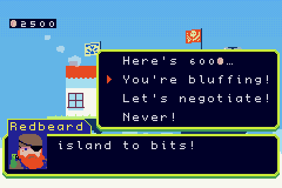
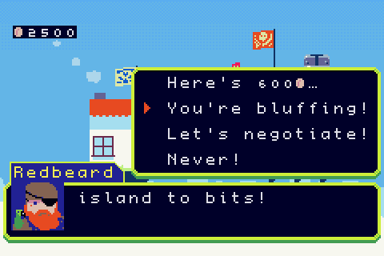
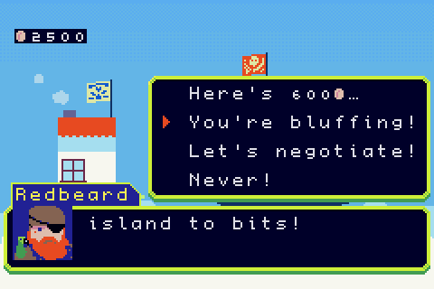
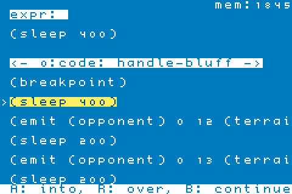

Skyland, a GBA homebrew RTS I've been working on for years, has a fairly extensive modding system. I'd like to demonstrate the process by extracting scripts from the ROM, editing one, and rebuilding the game-all you need is a copy of the ROM and a Python script. Let's start by picking a level scenario: I've chosen a simple one where the player encounters an angry pirate character called Redbeard!
Once the opening level dialog finishes, the game presents you with a few choices:

When you choose the option accusing Redbeard of bluffing, he angrily fires a broadside off of your bow:

Suppose we wanted to change what the game does when you accuse Redbeard of lying, where would we start? You could download the entire source code and set up a C++ cross compiler, but actually, for editing scripts, all you need is a copy of the game's ROM file and this unpack_rom.py script! This setup allows you to modify the game on any computer with an installation of python, no other tools needed! Place your copy of the game and the unpacking script in the same directory:
modding % ls
Skyland.gba unpack_rom.pyNext, you'll need to run the unpacking script. You can run it with the python command:
modding % python3 unpack_rom.py
If you inspect the current directory after running the script, you should see quite a few files. The unpack_rom.py script has extracted the engine code into SkylandEngine.gba, and unpacked all of the other resource files into various directories. The scripts/ folder contains all of the level scenarios, so we'll want to start there.
modding % ls
boot.ini lisp_symtab.dat SkylandEngine.gba
fs_hash.dat packages strings
fs.extracted.bin readme.txt tools
help repack.sh unpack_rom.py
licenses scripts
lisp_constant_tab.dat Skyland.gba
You can find any of the scripts by searching the game's dialog in the scripts/ directory:
modding % grep -r "You're bluffing" scripts
scripts/event/neutral/0/1_0.lisp: "You're bluffing!"
scripts/event/neutral/0/1_0.lisp: "You're bluffing!"Huh, looks like the game's scripts are all written in LISP :)
It's a real LISP dialect with a full numerical tower, support for async programming, and an optimizing bytecode compiler! Later in this post, I'll show the onscreen debugger!
When opening scripts/event/neutral/0/1_0.lisp, we see a function called handle-bluff, which implements Redbeard's reaction when accused of being deceitful.
(defn/temp handle-bluff ()
;; You accused redbeard of bluffing. He fires a broadside off your bow.
;; He fires three projectiles, with pauses in between.
(sleep 400)
(emit (opponent) 0 12 (terrain (player)) 0)
(sleep 200)
(emit (opponent) 0 13 (terrain (player)) 0)
(sleep 200)
(emit (opponent) 0 14 (terrain (player)) 0)
(sleep 1200)
;; Set up a dialog prompt, and await user input:
(let ((sel (await (dialog-choice* (tr (s+ "Yaargh!! I'm just a simple marauder, "
"trying to earn a decent living here! "
"[via petty extortion, how else?] "
"So what's it gonna be? Last chance..."))
(tr '("Pay 600@."
"Fight back."))))))
(case sel
(0 (on-dialog-accepted))
(1 (on-dialog-declined)))))
Some things here warrant some explanation. defn/temp is a
macro that declares a temporary function, to be cleaned up at the end of
the current level. The await keyword waits on a promise, many
functions accepting input from the player will return a promise, allowing
scripts to suspend execution and resume later. The tr
function translates text, but also doubles as a tag used by the
localization system when extracting strings from the game's scripts.
Let's edit the script to fire way more projectiles. Maybe something like this:
(defn/temp handle-bluff ()
;; Opening salvo, same as before
(sleep 400)
(emit (opponent) 0 12 (terrain (player)) 0)
(sleep 200)
(emit (opponent) 0 13 (terrain (player)) 0)
(sleep 200)
(emit (opponent) 0 14 (terrain (player)) 0)
;; A long pause. The player thinks it's over.
(sleep 1500)
;; It is not over.
(let ((shots 30))
(foreach (lambda (i)
(emit (opponent) 0 (+ 12 (mod i 3)) (terrain (player)) 0)
(sleep (+ 70 i)))
(range 0 shots)))
(sleep 1200)
(let ((sel (await (dialog-choice* (tr (s+ "Yaargh!! I'm just a simple marauder, "
"trying to earn a decent living here! "
"[via petty extortion, how else?] "
"So what's it gonna be? Last chance..."))
(tr '("Pay 600@."
"Fight back."))))))
(case sel
(0 (on-dialog-accepted))
(1 (on-dialog-declined)))))
Now we've edited the script and want to test it. All we need to do is run the repack.sh script, which we previously extracted from the rom file:
modding % chmod +x repack.sh
modding % ./repack.sh
creating fs.bin...
encoding 708 files...
symbol tab count: 815
constant tab count: 29
encoded 20677776 bytes
done!Now, let's run the Skyland.gba ROM and see how it looks:

That's quite dramatic! :D
Now, suppose you ran into an issue when editing the script, and wanted to
see what was going wrong. The game actually includes an onscreen script
debugger! You can either use the breakpoint-register function
to declare a breakpoint by specifying the symbol name of a function, or you
can simply call the breakpoint function anywhere in a
script.
(defn/temp handle-bluff ()
(breakpoint)
...)
If we rebuild and run the game again, we'll enter the debugger when hitting the breakpoint expression! Using the left and right dpad buttons, you can inspect variables, and look at the contents of the call stack, function arguments, etc.

Finally, I briefly mentioned the localization system when talking about
the tr tags in the scripts. If you wanted to translate the
game into a new language, you would just need to create new files in the
strings directory (follow the Spanish translation as an example), and use
the repack.sh script to zip the ROM back up! For more details about
Skyland LISP, you can find a much more detailed description in the help/
folder that we unpacked from the ROM earlier! Have fun scripting!